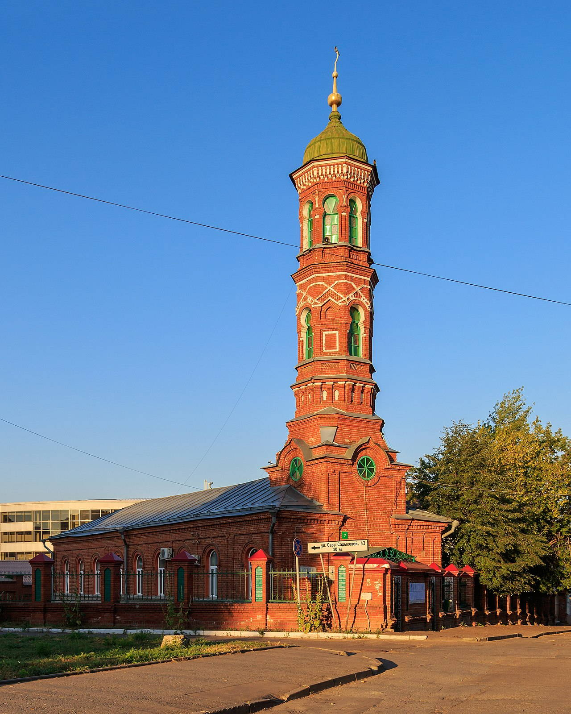
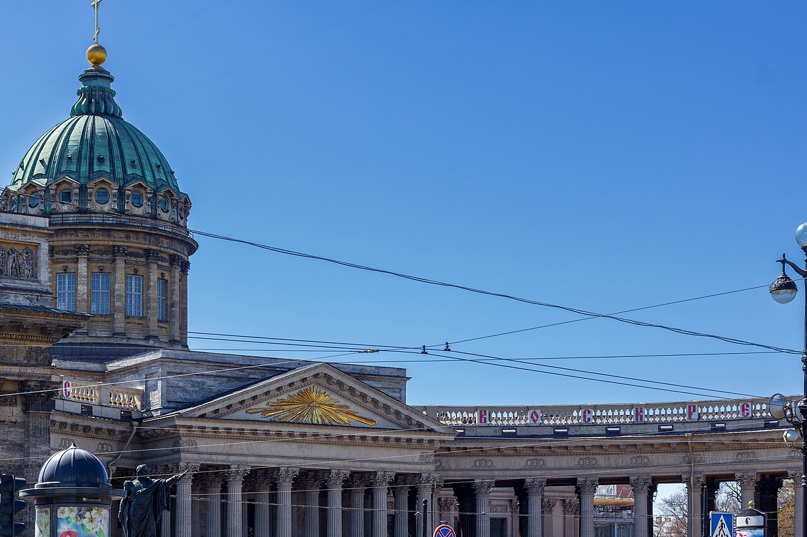
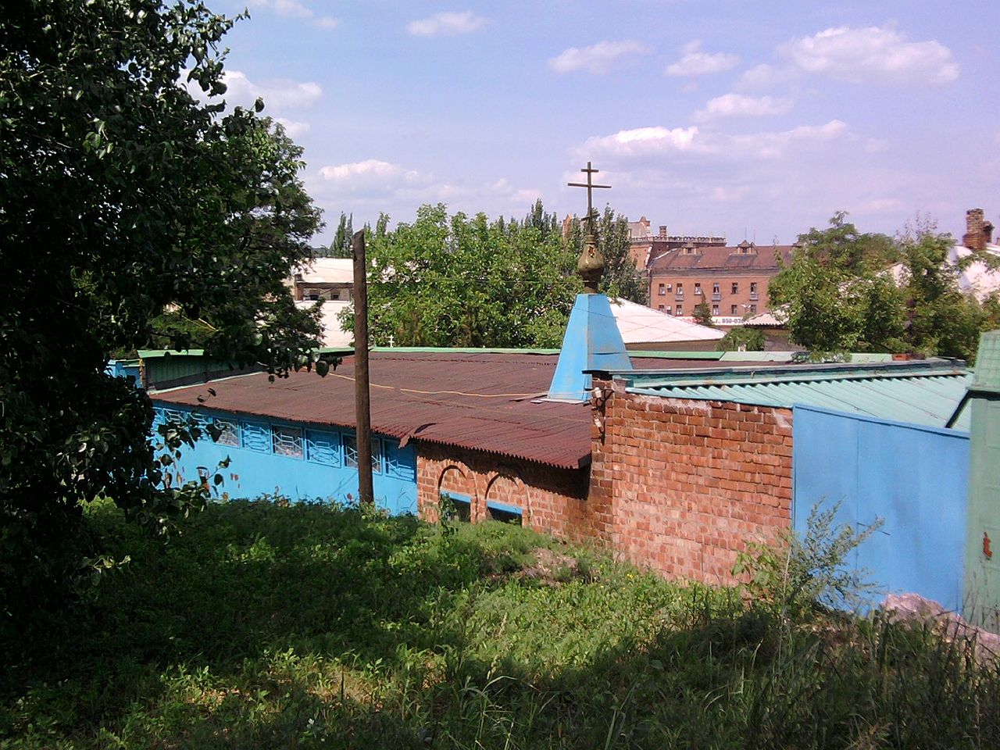

Исторические и справочные гербы


Kazan
Путеводитель. Объектов в этом выпуске: 35.
OTIUM — практика нарочитого досуга. В античном смысле otium — не побег от работы, а время, когда внимание возвращается к памяти, пейзажу и мысли — без прикладного дедлайна.
Мы выстраиваем маршруты для неспешного присутствия, а не для чек-листа достопримечательностей: важно быть в месте, а не «потреблять» виды.
OTIUM — не туроператор. Это приглашение пройтись, остановиться и оставить маршрут незавершённым, если свет на фасаде заслуживает ещё минуты.
Исторические и справочные гербы
Путеводитель. Объектов в этом выпуске: 35.
Казань — столица Республики Татарстан и крупный город на Волге, центр татарской и русской культуры.
Золотая Орда, Казанское ханство, присоединение к Русскому государству и индустриальная эпоха сформировали Кремль с мечетью Кул-Шариф и православными соборами. Казань — узел образования и спорта.
Имперский и советский периоды укрепили промышленность и транспорт на Волге; Универсиада 2013 года обновила инфраструктуру. Казань подчёркивает диалог культур в составе России и развивает науку, спорт и туризм как многонациональный центр Поволжья.

Historic Orthodox cathedral inside the kremlin, part of the ensemble inscribed on the World Heritage List.

Bauman Street — street in Kazan, Russia.

Main pedestrian thoroughfare with historic façades, cafés, and street life between the kremlin quarter and the core city.

Chak-Chak Museum — landmark in Kazan.

Church of Our Lady of Kazan — landmark in Kazan.

Epiphany Cathedral Kazan — landmark in Kazan.

Distinctive registry and celebration complex beside the Kazanka, nicknamed for its chalice-like roofline.
Iske-Kazan (2024-03-28) 38.jpg

Iske-Kazan (2024-03-28) 38.jpg — landmark in Kazan.
Kazan Burnay Mosque 08-2016.jpg

Kazan Burnay Mosque 08-2016.jpg — landmark in Kazan.
Kazan Cathedral Exterior.jpg

Kazan Cathedral Exterior.jpg — landmark in Kazan.
Kazan church Luhansk.jpg

Kazan church Luhansk.jpg — landmark in Kazan.

Kazan Family Center view — landmark in Kazan.

Kazan Federal University — landmark in Kazan.

UNESCO-listed fortress and the symbolic heart of Tatarstan, with kremlin walls, towers, and major religious buildings.

The Kazan Kremlin (Russian: Казанский кремль; Tatar: Казан кирмәне) is the chief historic citadel of Kazan, a city in Russia. It was built at the behest of Ivan the Terrible on the ruins of the former castle of Kazan khans. It was declared a World Heritage Site in 2000.

Aerial context for the kremlin citadel on a rise above the Kazanka and the city grid.

Seasonal view of the kremlin ensemble under snow, highlighting roofs and open spaces inside the walls.
Kazan Mother of God icon church — landmark in Kazan.

Kremlin embankment Kazan — landmark in Kazan.

Kremlin Spasskaya Tower — landmark in Kazan.

Qol Şärif Mosque — mosque in Qazan Kremlin, Qazan, Tatarstan.

Large congregational mosque inside the kremlin, rebuilt as a major landmark of modern Kazan.

Märcani Mosque — mosque in İske Bistä microdistrict, Waxitof City District, Qazan, Tatarstan.

Riverside park marking the millennium of Kazan, with paths and views toward the kremlin quarter.
Minselhoz.jpg

Minselhoz.jpg — landmark in Kazan.

National Museum of Tatarstan — landmark in Kazan.

Nikolsky Cathedral Kazan — landmark in Kazan.

Old Peter and Paul Cathedral — landmark in Kazan.

Baroque cathedral away from the kremlin, associated with the Russian imperial presence in the city.

St John the Baptist Church — landmark in Kazan.

Söyembikä leaning tower — landmark in Kazan.

Söyembikä Tower (Tatar: Сөембикә манарасы, romanized: Söyembikä manarası; Russian: Ба́шня Сююмбикэ́, romanized: Bashnya Syuyumbike), also called the Khan's Mosque, is probably the most familiar landmark and architectural symbol of Kazan. Once the highest structure of that city's kremlin, it used to be one of the so-called leaning towers. By 1990s, the inclination was 198 centimeters (78 in).

Temple of All Religions — landmark in Kazan.

Transfiguration Monastery Kazan — landmark in Kazan.

Tukay Square — landmark in Kazan.